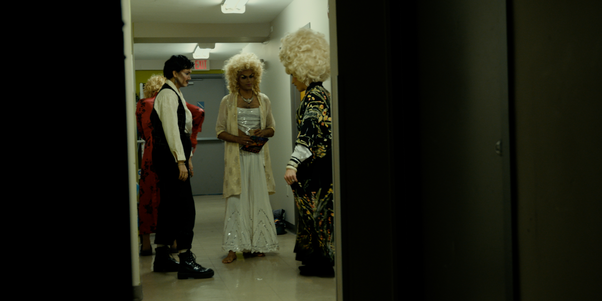

Long story short, we like movies so we make movies, about all sorts of things. Join the fun.
NEWS /
JOURNAL
Festival announcements, production milestones, collaborations, post-production updates, and everything happening inside Flying Cat Productions.

Victoria Ka Raja Selected for Vancouver Queer Film Festival 2026
Victoria Ka Raja joins the 2026 Vancouver Queer Film Festival, marking another step in the film’s growing festival journey.


Victoria Ka Raja Premieres at Justice4Reel Film Festival
The documentary begins its festival journey in Edmonton with a screening at Justice4Reel Film Festival.
Read Story →
Victoria Ka Raja Completes Final Picture Lock
The final edit is completed ahead of the film’s festival journey.


Animation Sequence Completed for Victoria Ka Raja
The animated prologue reaches completion, bringing the story of Ila and Sudyumna into the visual language of the documentary.
Read Story →Hypnos Lullaby Completes Principal Photography
After an intensive multi-location shoot, principal photography on the pilot officially wraps.
Read Story →
Films, unfinished thoughts, late nights, strange ideas, and whatever comes next.